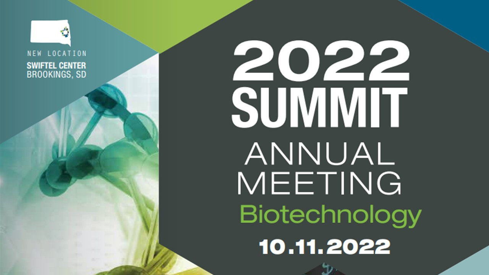

Biotech Summit
The alumini of biotech department were
contacted and honoured at the institutional level
due to their notable achievement in the field of
biotechnology and they also delivered lectures
and motivated the students .
Mitacs
Two of our alumini who are currently pursuing
their masters at top universities of Canada were
invited to brief the students of BIT about the
MITACS scholarship program which is a fully
funded scholarship program for students who
are unterested in pursuing masters abroad.
Wiki Wars
BIOTS conducted one of the biggest technical
event at pantheon 2022. This involved a
computer game designed by biots in which
students were tested with their knowledge of
science and technology. Footfall (400
Students).
Plantation Drive
A plantation drive was organised by BIOTS in
which 28 plant saplings of different species were
planted inside the department as well as in the
areas surrounding the department.

Hera Pheri
BIOTS conducted the 3rd largest events at the
biggest cultural fest BITOTSAV 2023 in which we
witnessed a footfall of 500(+) students. This was
a treasure hunt game including the decoding of
clues revolving around biotech and technical
aspects and then reaching to the exact location
in a limited time frame.
Trip to Sudha dairy factory of Ranchi
It was a combined initiative by the department of
biotechnology and BIOTS. we took the students
of the biotech department to a visit to the local
Sudha dairy to make them familiar with the dairy
industry process.